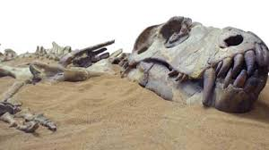

Encuentran un dinosaurio en Argentina que podría ser el más grande de la historia
01 de Junio, 2021 | 16.12Investigadores hallan los restos fósiles de un gigantesco dinosaurio que se encuentra en la Argentina. Sería la criatura más grande de la Tierra. Dinosaurio más grande en la historia fue encontrado en la Argentina En las últimas horas, una noticia procedente de la Provincia de Neuquén causó revuelo en todo el mundo. Los restos fósiles de un dinosaurio fueron hallados en el noroeste de la Patagonia. El mismo se trataría del animal terrestre más grande en la historia de la Tierra.
De acuerdo a lo que publicó un grupo de investigadores en la revista Cretaceous Research, el gigantesco animal sería un titanosaurio, un grupo de dinosaurios saurópodos de cuello largo. "Es considerado uno de los saurópodos más grandes jamás encontrados, probablemente superando el tamaño de Patagotitan", indicaron en el artículo.
Descubren en Mendoza el “dragón de la muerte”, el pterosaurio más grande de Sudamérica
29 de mayo de 2022 | 00.41Se trata de Thanatosdrakon amaru. El estudio, liderado por el investigador de la Universidad de Cuyo y el CONICET Leonardo Ortiz David, ahonda en la evolución de esos vertebrados voladores gigantes, que convivieron con los dinosaurios.
Un equipo paleontológico de la Universidad Nacional de Cuyo (UNCUYO) descubrió los restos del pterosaurio más grande de Sudamérica, que denominó Thanatosdrakon amaru (serpiente voladora “dragón de la muerte”), en afloramientos ubicados en el sur de Mendoza. El hallazgo fue localizado en un yacimiento próximo al río Colorado, en rocas de fines del Período Cretácico, cuya antigüedad se estima en 86 millones de años. Los restos fósiles fueron encontrados y preservados en un procedimiento de rescate efectuado durante la realización de obras civiles. Se pone así de manifiesto la importancia de las acciones de protección patrimonial durante la ejecución de obras en sitios con alto potencial paleontológico. Los huesos pertenecen al esqueleto axial (vértebras) y al esqueleto apendicular (miembros anteriores y posteriores) de dos ejemplares. El equipo responsable del descubrimiento estuvo a cargo de Bernardo González Riga, director del Laboratorio y Museo de Dinosaurios de la Facultad de Ciencias Exactas y Naturales (FCEN) de la UNCUYO. Por su parte, las tareas de excavación y extracción del ejemplar fueron dirigidas por Leonardo Ortiz David, coordinador general del Laboratorio y Museo de Dinosaurios de la FCEN y becario posdoctoral del Instituto Interdisciplinario de Ciencias Básicas (CONICET-UNCUYO).